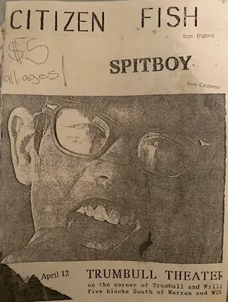
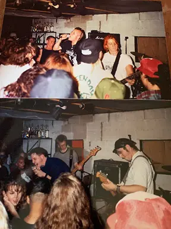

This blog will be a space to share old stories, current thoughts or other writings that will likely include poetry, of course Trumbullplex related posts as well as my old journal entries. I’m going to go ahead and declare this a free space for any of my writing but also hopefully may include guest authors from time to time. I won’t promise all the writing will be outstanding but I hope you bear with me for the times I want to share something for context not necessarily quality.
My First Trumbullplex Show
On the back of this flyer was scrawled “404 is dead” with directions to the theatre. This was a reference to 404 Willis which is where shows had been hosted, and that was that. I’d say that makes this show the first official Trumbullplex punk show.
It was April 12th 1994, I was 22 years old and rolled up to a punk show in Detroit with the bands Spitboy (CA) and Citizen Fish (UK) at a place I had never heard of called The Trumbullplex.
The bands had been staying with me at 516 McCourtie in Kalamazoo. I had been living in Kzoo a year or two and was pretty involved in the local music/punk scene, including hosting shows in our basement with my good friend Brian and other community members. These bands were booked for our short-lived all ages venue called Dagobah Square for Wednesday April 13th, (the day after the Detroit show). Dagobah was an old laundry mat that members of the punk community took upon themselves to turn into an all ages space (which is always worth it no matter how long it lasts), but that’s another story.
My guess is, coming from their last show these two touring bands started to have van troubles and made their way to the next closest gig, which was us. I recall Richard the Roadie was out back working on the van a lot, and Dick Lucas had an intense body odor, and at one point, we all crammed into Hey Juans for burritos on campus. I really liked talking to Trotsky from Citizen Fish and I was a big Spitboy fan. My assumption then was they were an all female hardcore band (from the Bay Area) but I don’t know how or if they actually identified that way personally or in regards to the band. Spitboy always talked in between songs about important issues and was fierce AF! I had seen them in 1992 but I don’t think we talked much then.
Just to mention, that show in ’92 was at “The Pole Barn” in Otsego, just outside of Kzoo. Green Day was on the bill but dropped off because they were about to make mainstream gold.
Anyways, one of us lent a van to help get Citizen Fish and Spitboy to their Detroit gig 2 ½ hours away and then back to Kzoo. It was not uncommon to “get in the van” or to try and catch multiple shows and as I was up for some adventure, I jumped in the van with them to their Detroit shows.
To tell the truth, I barely remember that first time at the Trumbullplex. Maybe we came in late or I was helping the bands and then left immediately after the show, or maybe it’s just that it’s been over 30 years, who knows? Whatever the case, I do vividly recall pulling up in front of those two old red Victorian mansions with a driveway in between them. There were “kids” all over the place and I remember thinking, “Holy shit! This is amazing!” It was love at first sight. Even having a great love for what we were doing in Kalamazoo this was kinda unbelievable. Since then, thousands upon thousands of people have had a similar experience at the Trumbullplex. If it was at first impressive, or intimidating, soon enough it was inspiring.
-Jhon Clark